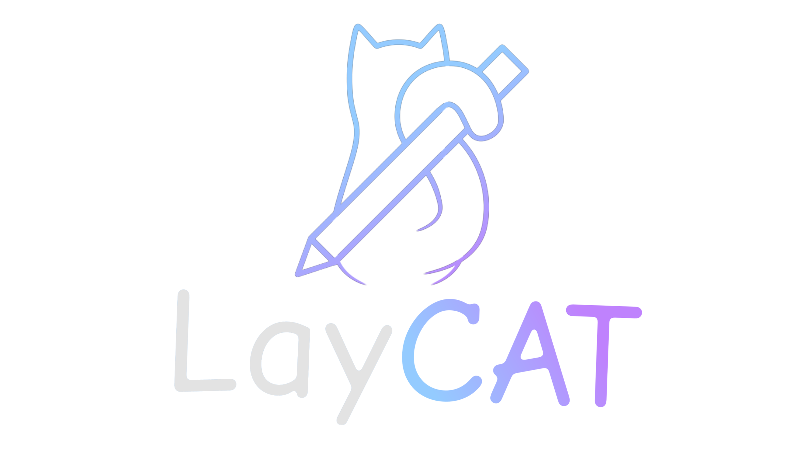
映像制作の レビュー と 進行管理 を、
ブラウザ 1 つで完結させるツール。
動画・画像への直接描き込み、進捗の見える化、多層 EXR のプレビュー、クラウド共有まで。 重たいツール群に頼らず、ブラウザだけで軽快に動きます。
🚀『七月の窓辺』── LayCAT で管理されている制作カットの一例。
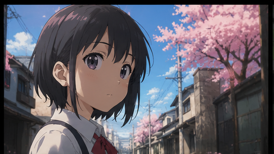
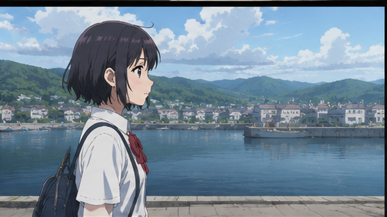
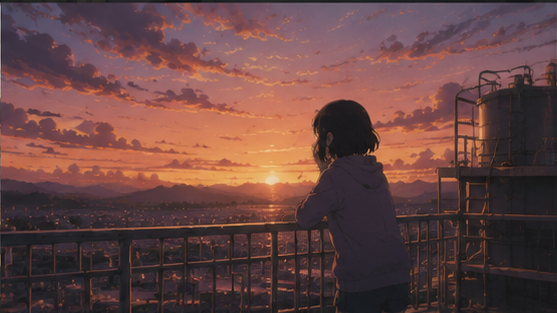
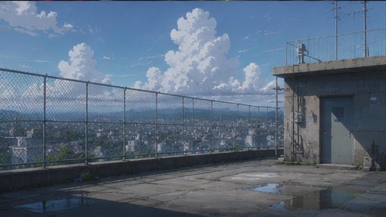
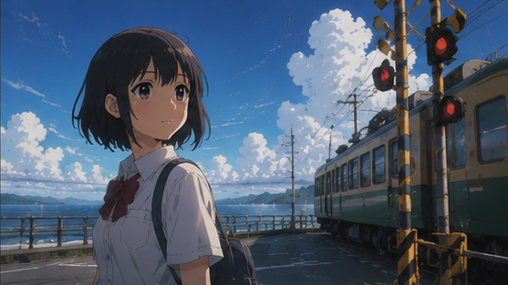
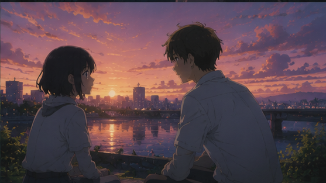
コマに直接描き込み、フレームごとにコメント。OK / リテイク / NG で判定できます。
エピソード別・工程別・ステータス別のグラフを横並びで一望。担当者でしぼり込みも。
多層 EXR をブラウザで直接プレビュー。Beauty / Depth / Normal / Cryptomatte まで自動判定。
Cloudflare R2 対応で、会社・自宅・出先どこからでも同じデータをブラウザで開ける。
アップロード・指示・確認・提出まで、映像制作でよくやる作業がひととおり揃っています。
カットの工程を開くと、動画・コメント・アノテーション・ステータス・担当がすべて 1 画面に集まります。 アップするたびに版（v1・v2…）が残り、履歴も辿れます。
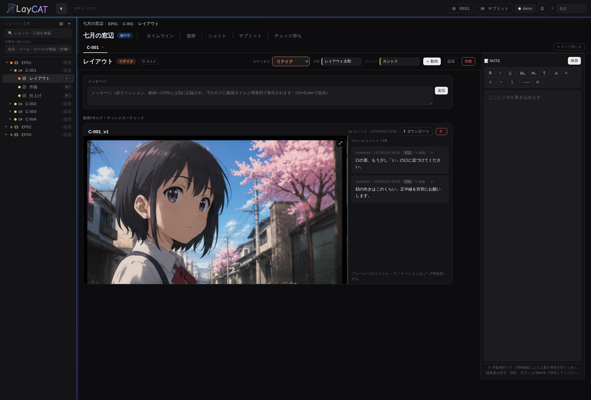
動画のフレームに直接ブラシで描き込めます。指示はレイヤーで分けられ、あとから編集・削除も可能。
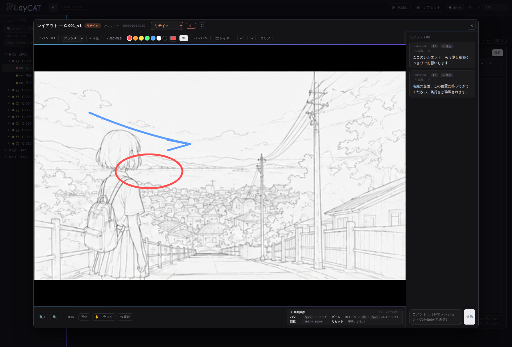
「顔の向きガイド」で、上下・左右・傾きを 3D 的に示せる LayCAT 独自機能。 描いた指示は自動で動画に埋め込まれ、再生すると重なって表示されます。
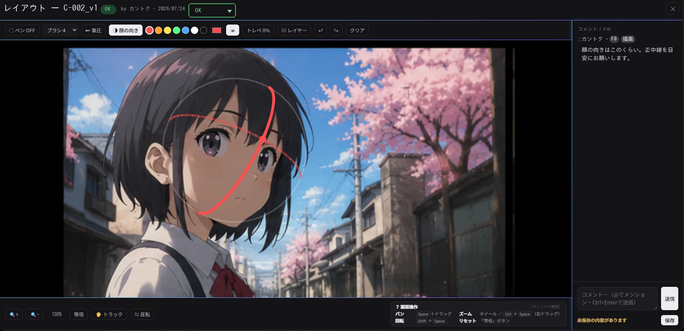
エピソード別の円グラフを横に並べて、作品全体の進み具合が一目でわかります。 工程／ステータスをワンクリックで切替、担当者でしぼり込みも可能。
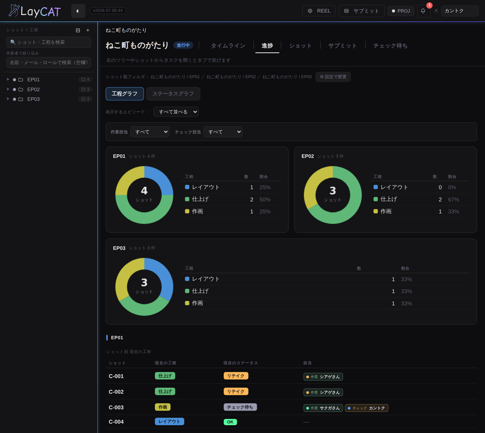
チェック担当者ごとにタブが分かれ、自分の担当分だけを表示できます。 残り件数はバッジで見えて、見落としを防止。
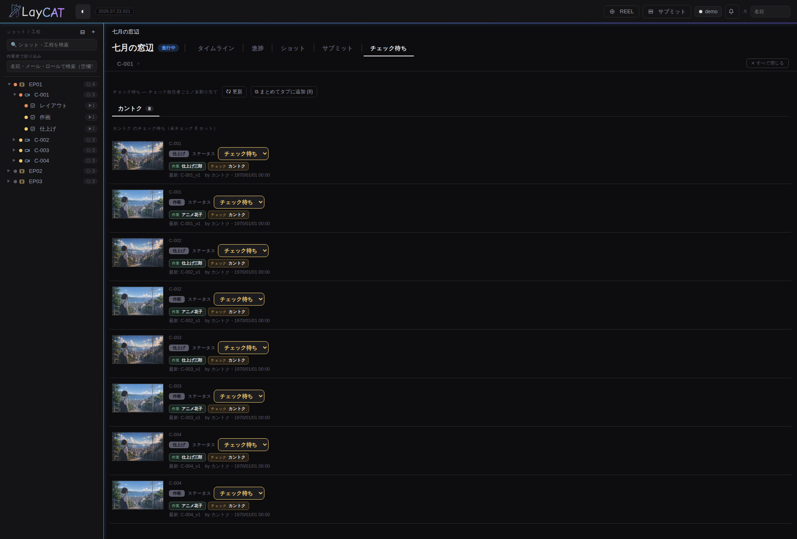
複数のカットを並べて連続再生。並び替えて通しのテンポを確認したり、REEL 上で書いたコメントは各カットのタスクページに反映されます。
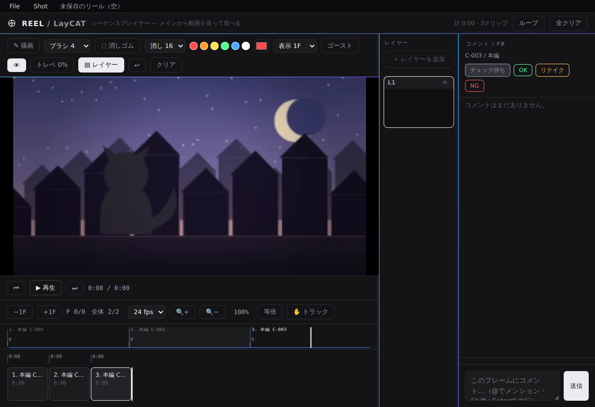
絵コンテから最終納品まで──ひとつのカットが積み重ねる工程を、LayCAT はまるごと管理します。
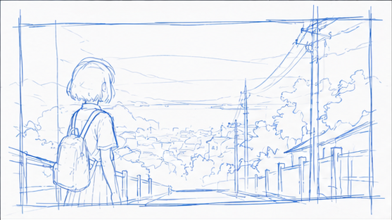
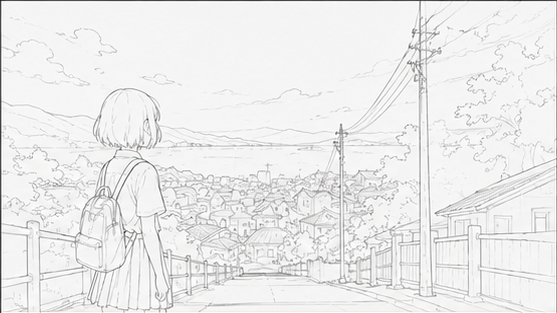
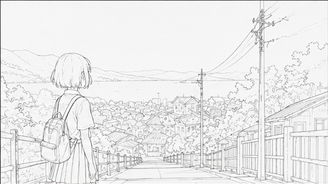
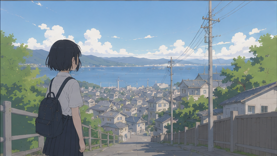
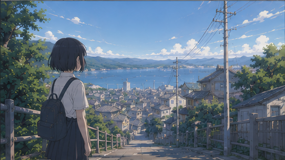
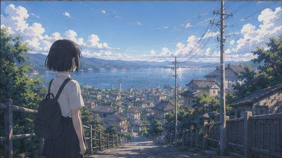
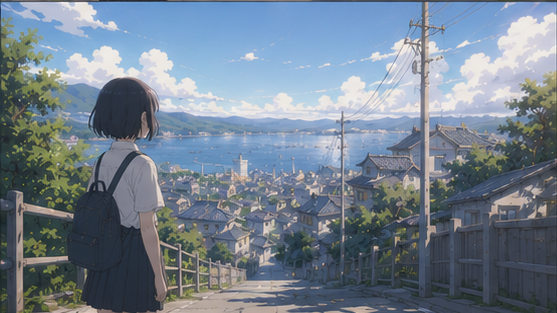
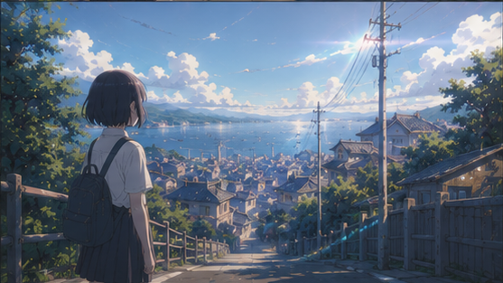
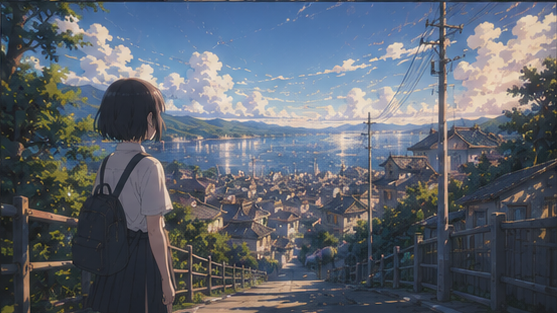
各工程で 版が積み上がり、担当が変わり、チェックが入る。 LayCAT ではこの流れを 1 プロジェクト内で完結して追跡できます。
レビュー ＆ 進行管理ツールは多くありますが、LayCAT はブラウザだけで軽快に動きながら、 EXR ネイティブ対応・クラウド共有まで揃えているのが特徴です。
CG レンダーの中間ファイル（.exr）を、Nuke や After Effects なしで直接ブラウザで開けます。 AOV レイヤーを自動判定し、Cryptomatte まで色分けして表示。
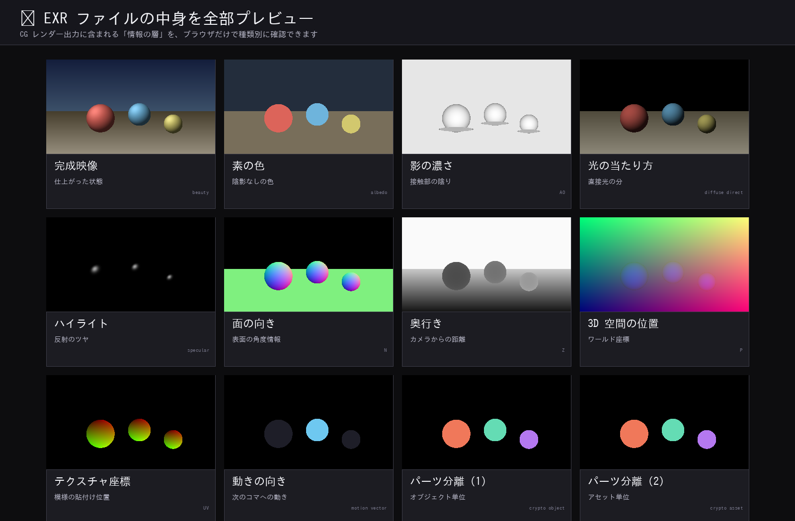
プロジェクトデータを Cloudflare R2（クラウドストレージ）に保存できます。 会社・自宅・出先どこからでも、同じデータをブラウザ 1 つで開ける環境に。
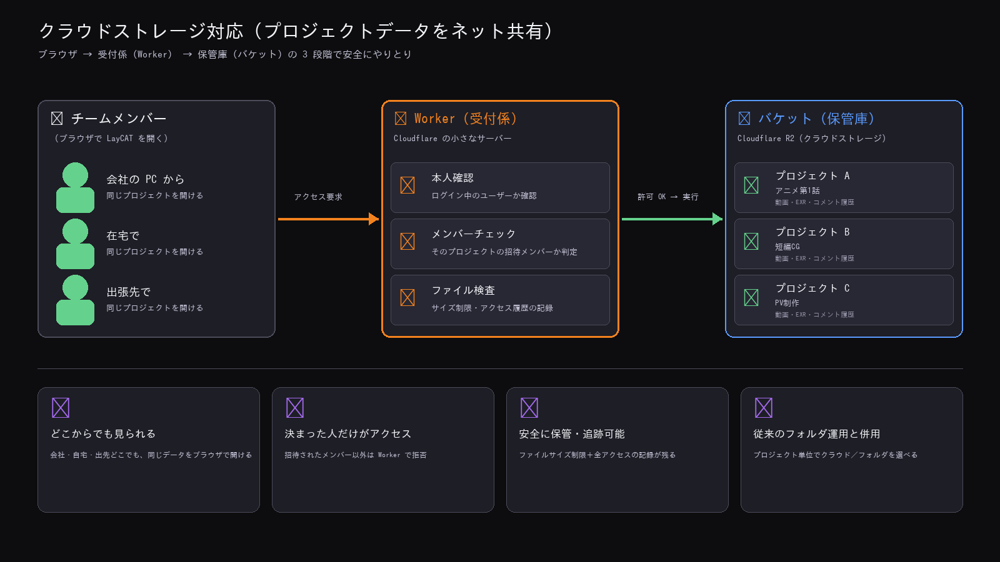
プロジェクトデータをローカルフォルダや Google Drive / NAS の共有フォルダに丸ごと置くだけで、 それがそのままチームの「1 つの正」になります。サーバー構築・月額課金・運営者経由のデータ流出、すべて不要。 他のツールはクラウドや自社サーバーへの接続が前提ですが、 LayCAT ではネット接続なしのフォルダ運用も、クラウド運用と同格の正式な使い方として扱われます。
laycat.project.json と media/ が置かれるだけの素直な構造複数カットをつなげて再生している最中に画面へ書き込んだ描き込みやコメントは、 それぞれのカットのレビュー履歴にも自動で残ります。 「試写のあとに 1 カットずつ開き直して書き写す」というよくある二度手間が発生しません。 逆に、各カットの画面からも「そのカットが含まれる連続再生」にワンクリックで戻れるので、 行き来がスムーズです。
他のツールでは「連続再生用のコメント」と「個別カットのコメント」が別々に保存されるのが一般的で、 あとから手動で書き写す必要があります。LayCAT ではどちらから書いても両方に残ります。
右上の「アプリを開く」から、ブラウザで LayCAT を起動します。インストール不要。
フォルダ共有 or クラウド保存を選んで、プロジェクトを作成。カットや工程を追加します。
「＋ 動画」から素材をアップ。コマに描き込み、コメントし、OK / リテイクで判定するだけ。
フォルダを共有するか、クラウドプロジェクトにメンバーを招待すれば、すぐに共同運用できます。